Audit items 1 to 6 (see ios27-audit.md) applied to the reference builds, shot at the same state on both sides. Applied 2026-11-07 with the Round 2 picks: inline 17/700 titles (B) and the minimal chart lift (A). The Round 1 large titles and brighter bars below were not taken. Explorations pages stay as they are, as the record of how we got here.
Large titles are Apple's pattern for top-level screens (Mail, Health). Pushed screens like these usually keep a centered inline title, which is just as native. Option A gives the large title more room under the back button. Option B is the standard inline title: centered 17/700, no empty row.
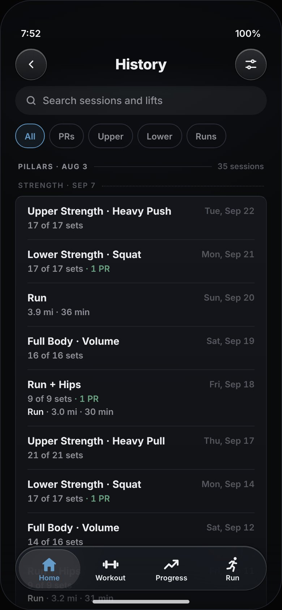
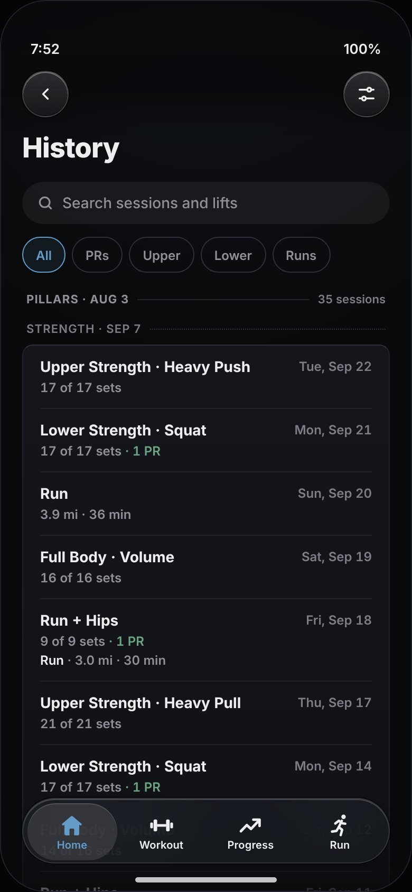
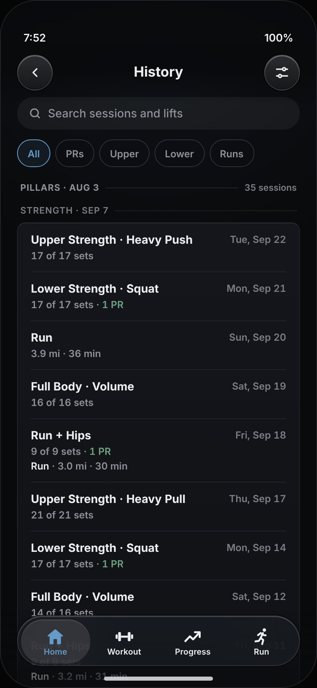
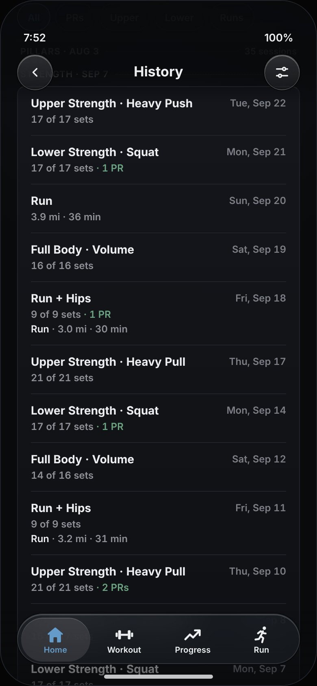
Round 1 lifted both bars and they read too bright. Only the sleep bar actually failed contrast, so option A keeps recovery as it was (#A4A5AC) and lifts sleep just past 3:1 (#70727A). Option B dims both (#8F9098 / #6A6C74), at the cost of the two shades being closer together.
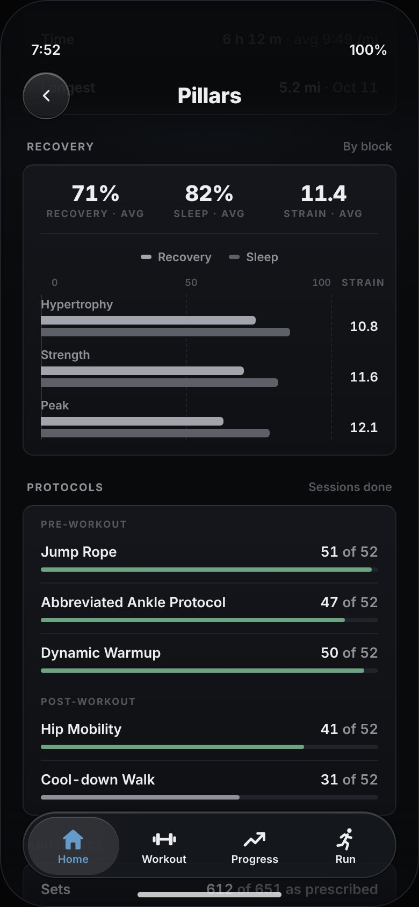
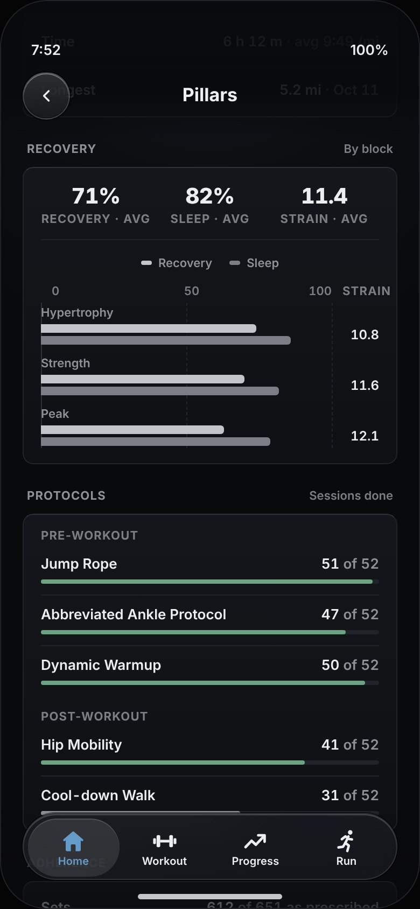
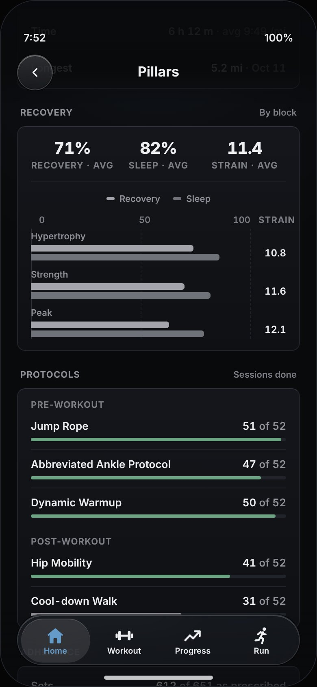
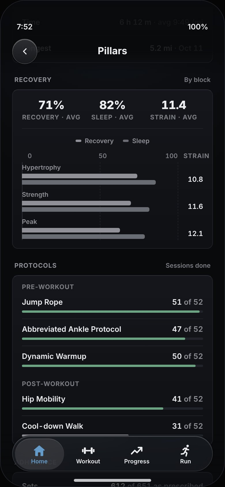
Grey labels (Today, Recovery, This week, weekday letters) go from #55575F to #7C7E86 and from 9–10px to 11px. Caps labels get tighter tracking so they keep their width. Layout unchanged.
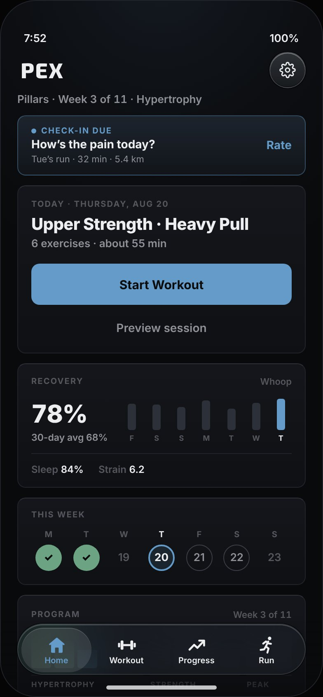
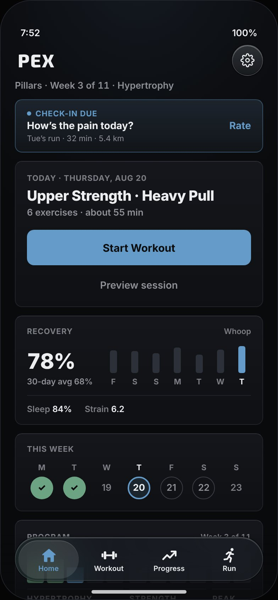
Calendar becomes a large 26/800 title under the bar, left-aligned, the same move Home's wordmark makes. Program and block rows, the day card labels and weekday letters pick up the lighter grey and 11px.
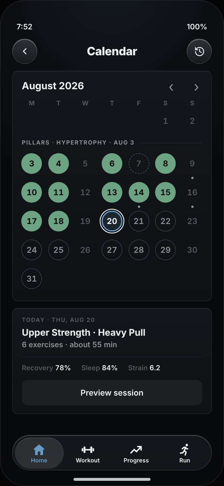
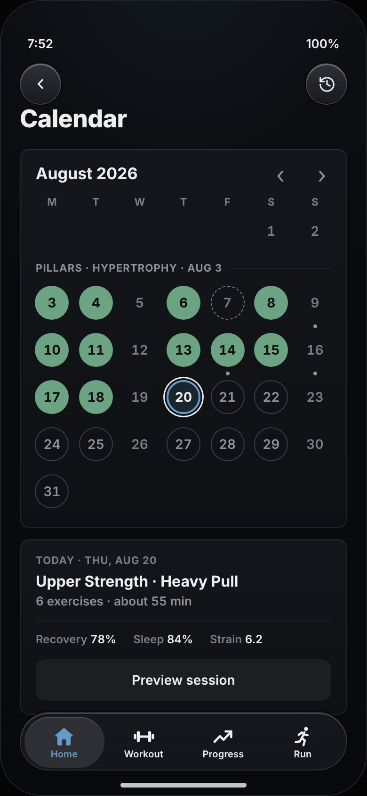
Scroll and the large title fades out while a 17/700 Calendar fades into the bar between back and History. That's the native iOS pushed-screen header.
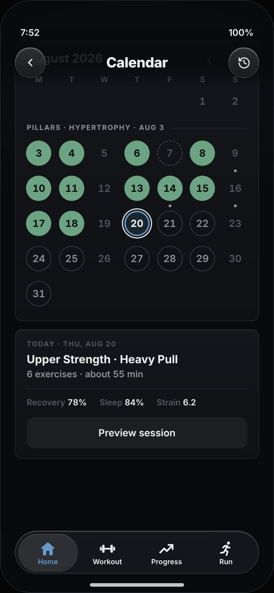
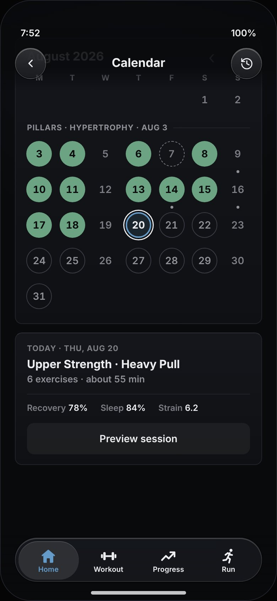
Same header move. The group headers (Pillars · Aug 3, Strength · Sep 7, 35 sessions) are 11px in the lighter grey.
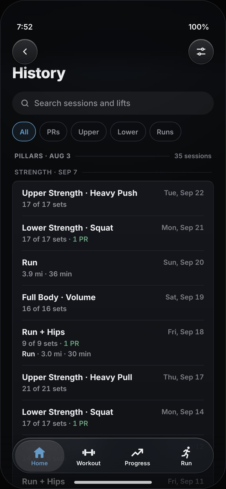
Inline History title in the bar once you scroll.
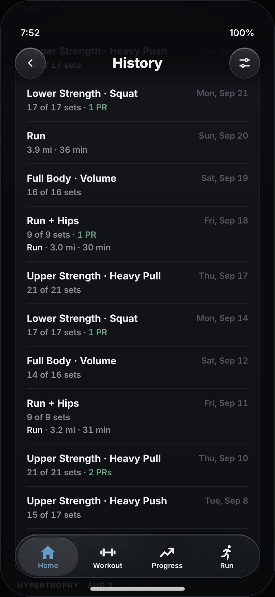
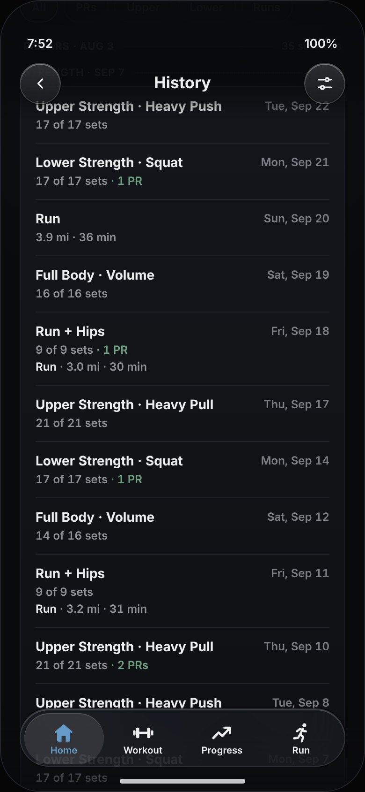
Close moves to the top left (Apple: Close or Cancel leading, Done trailing). Filter becomes a centered 17/700 sheet title. Show N sessions becomes a capsule, matching the sheet's rounded corners.
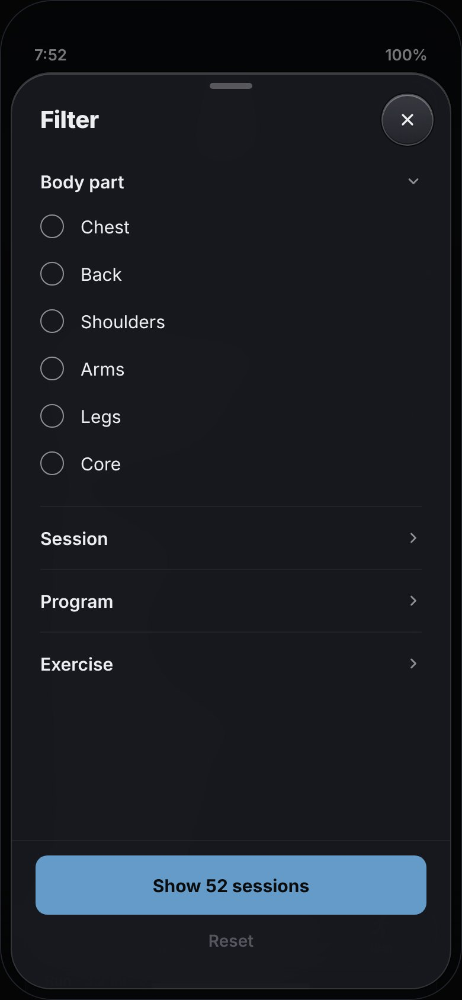
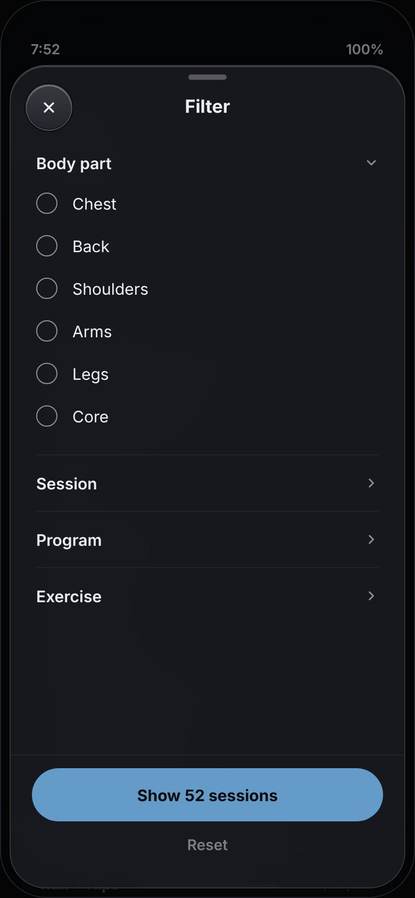
Pillars moves into a large title. Top card labels (Sessions, Hypertrophy · Strength · Peak, Adherence, PRs) go to 11px and the lighter grey.
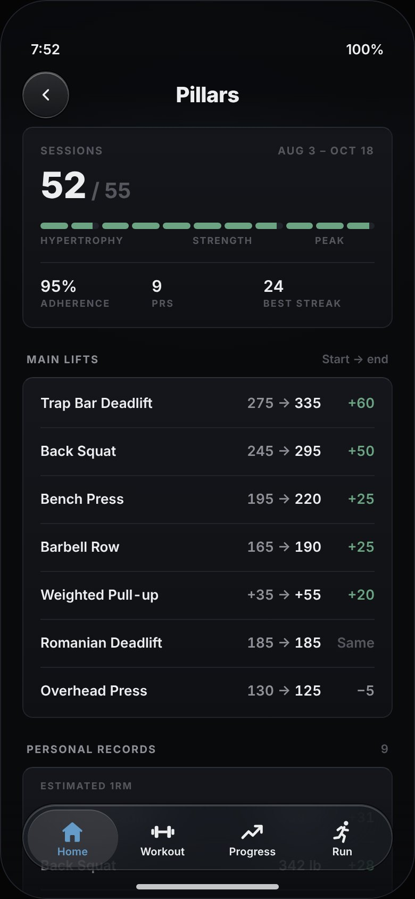
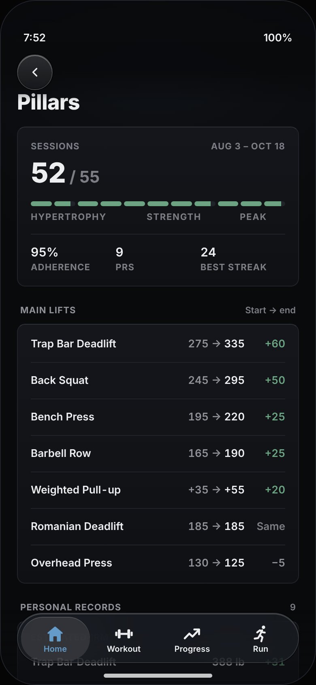
Recovery bars #A4A5AC → #C4C5CB, sleep bars #5E6069 → #7C7E86 so both clear 3:1 against the track and stay clearly different. Axis, block names and stat labels go to 11px.